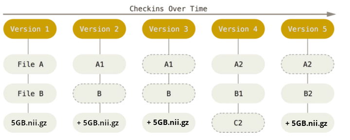

![]()
| No | Time | Title | Contents | Reading |
|---|---|---|---|---|
| 1 | 09:30 - 10:15 | Introduction to Version Control | Logistics and course admin Introduction to version control Introduction to Git |
Introduction to Version Control |
| 2 | 10:15 - 10:45 | Basics of the Command Line | File systems and navigation Benefits of the command line Basic command line commands |
Command Line |
| 3 | 10:45 - 11:00 | Setup & configuration of Git | Setup & configuration of Git | Setup, Installation (if needed) |
| 4 | 11:00 - 12:00 | Basics of Git | Initializing a Git repository Practicing basic Git commands Tracking changes wih Git Ignoring files with .gitignoreGood commit messages |
First steps with Git, Git Essentials |
| 5 | 12:00 - 13:00 | Branches, Merging, Merge Conflicts | Understanding branches in Git Creating and switching between branches Merging branches Resolving merge conflicts |
Branches |
| 6 | 13:00 - 14:00 | Lunch Break | Enjoy your lunch! | |
| 7 | 14:00 - 15:00 | Integration with GitHub / GitLab | Introduction to remote repositories Managing repositories on GitHub / GitLab Pushing and pulling changes Cloning a remote repository |
Remotes Intro |
| 8 | 15:00 - 16:00 | Collaboration on GitHub / GitLab | Forking Collaboration with GitHub Flow Pull / Merge Requests Issues Project Management |
GitHub Advanced, GitHub Issues |
| 9 | 16:00 - 16:30 | Summary & Outlook | Summary of course contents Outlook to more related topics Discussing open questions |
Session 8: Summary & Outlook
Track, organize and share your work: An introduction to Git for research
Course at Max Planck Institute for Human Development
Slides | Source


16:00
Tags, releases, DOIs: Integration with Zenodo
“Zenodo, a CERN service, is an open dependable home for the long-tail of science, enabling researchers to share and preserve any research outputs in any size, any format and from any science.” – from the Zenodo GitHub README

Integrate your repository on GitHub with Zenodo
“To make your repositories easier to reference in academic literature, you can create persistent identifiers, also known as Digital Object Identifiers (DOIs). You can use the data archiving tool Zenodo to archive a repository on GitHub.com and issue a DOI for the archive.” – Details in the GitHub documentation
- Navigate to the login page for Zenodo.
- Click Log in with GitHub.
- Review the information about access permissions, then click Authorize zenodo.
- Navigate to the Zenodo GitHub page.
- To the right of the name of the repository you want to archive, toggle the button to On.
See our book chapter on “Tags & Releases”.

Version Control for data: DataLad
… for data (binary files) 
Sadly, Git does not handle large files well.

Reproducibility is a spectrum and a journey

Footnotes
inspired by Richard McElreath’s “Science as Amateur Software Development” (2023)
see “Towards a culture of computational reproducibility” by Russ Poldrack, Stanford University